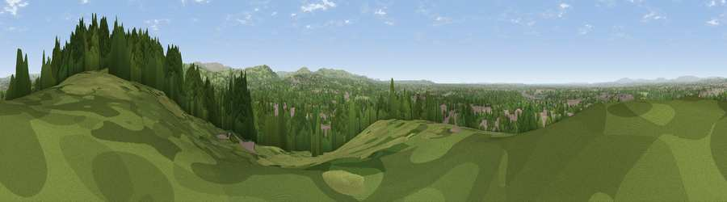

Viewpoint near Haughton Green
#28860 in England · top 65% of its area beats it · near Haughton Green · access?Where it is
The exact computed spot (SJ 93925 91375). Click the marker for map links.
Public access: no public right of way or access land is recorded at this exact spot — it may be on private land. Computed from Natural England's CRoW access layer and OpenStreetMap rights of way — not the legal definitive map. Always verify locally.
The view, rendered

A 360° render of this exact spot computed from the terrain model, tree cover and land cover — summer colours, afternoon light, calibrated against photographs of famous viewpoints. Real trees, hedges and buildings will differ in detail.
The panorama
Grey silhouette: terrain skyline in each direction (720 bearings, Earth curvature and refraction included). Dashed green: skyline with trees (+15 m) and buildings (+8 m) as obstacles. Blue strip: how far the ground is visible on each bearing.
Where the view opens
Wedge length = distance to the farthest visible ground on that bearing (vegetation-aware). Rings at 10, 25 and 50 km.
What fills the view
49% woodland · 32% built-up · 19% grassland
Angular shares of the visible panorama (visual magnitude), not map area. Landscape diversity 0.45 (0–1 Shannon).
Key numbers
More beautiful places nearby
The staircase of upgrades: each row has a higher view potential than everything closer. Driving times are estimates from straight-line distance, calibrated against real road routing — check an actual route before setting out.
| Place | Direction | Drive | Score |
|---|---|---|---|
| Viewpoint near Haughton Green | NE · 1 km | ~2 min | 50.5 |
| Viewpoint near Compstall | ENE · 1 km | ~4 min | 71.7 |
| Harrop Edge | NE · 7 km | ~14 min | 74.6 |
| Wild Bank | NE · 8 km | ~16 min | 76.2 |
| Viewpoint near Carrbrook | NNE · 10 km | ~19 min | 77.1 |
| Viewpoint near Edenfield | NNW · 30 km | ~47 min | 77.5 |
| Viewpoint near Mow Cop | SSW · 35 km | ~53 min | 78.9 |
| White Brow | NW · 35 km | ~53 min | 82.9 |
53.41914, -2.09287 · source: screening · position refined by local search. Computed location — check access rights before visiting.